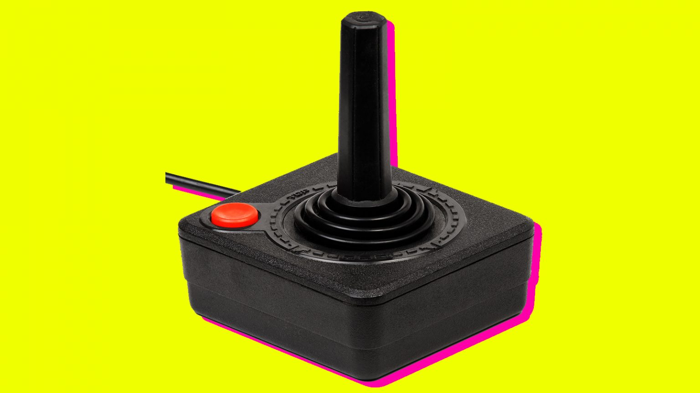
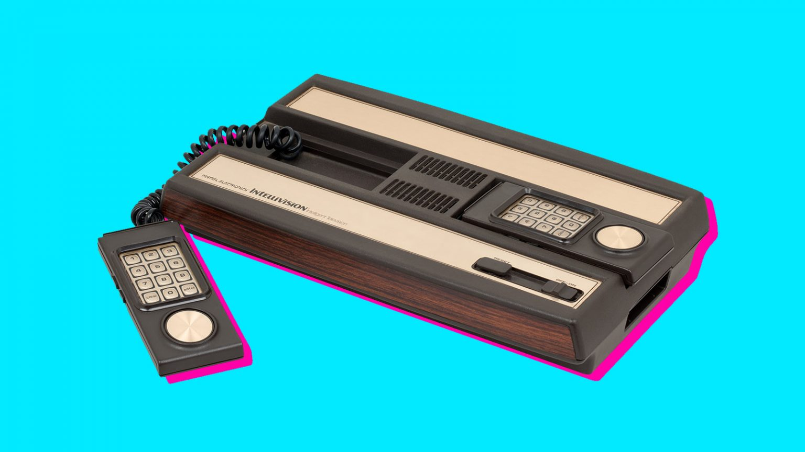
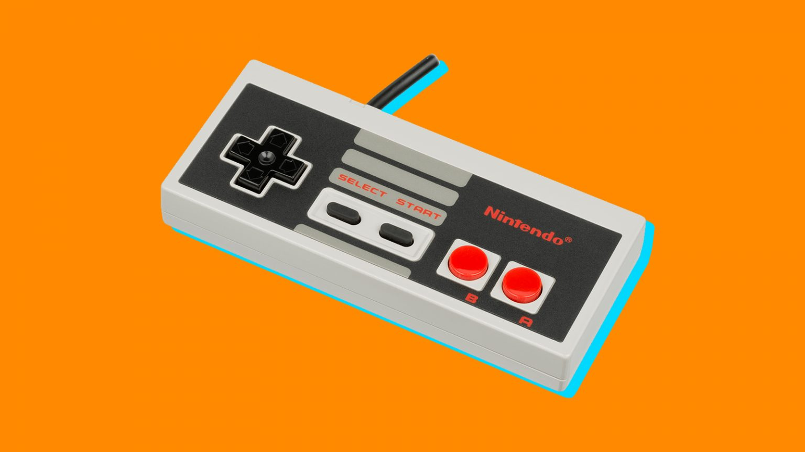
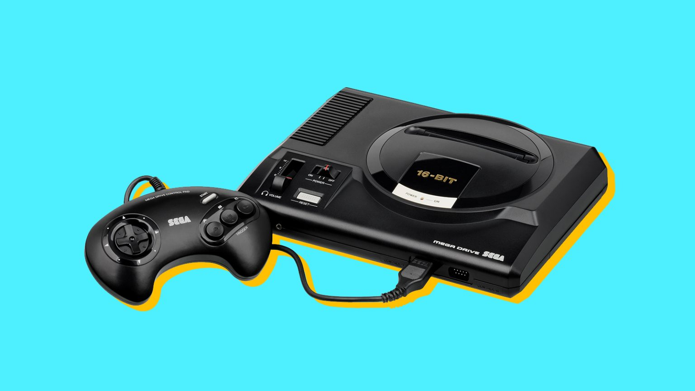

history of game consoles
atari console
The atari came out in 1977. it is known for its arcade game like resemblence with its four directional joystick and singular button. it wasn't the first gaming console invented, however it is well known for being a groundbreking device that has influenced the outcome of consoles today.
The intellivision
the intellivision console came out in 1979, when the concept of video game consoles were fairly new, but exciting. its number pad and rotating dial allowed for actions more complex than the atari.
The nintendo
in 1983, nintendo came out with a console that is now seen as a classic design. the controller had a start button in the centre with left/right buttons and a directional pad to the left.
sega console
the sega genesis console came out in 1988. it feautered a smooth design, rounded edges, and a longer battery life which meant longer playing times.